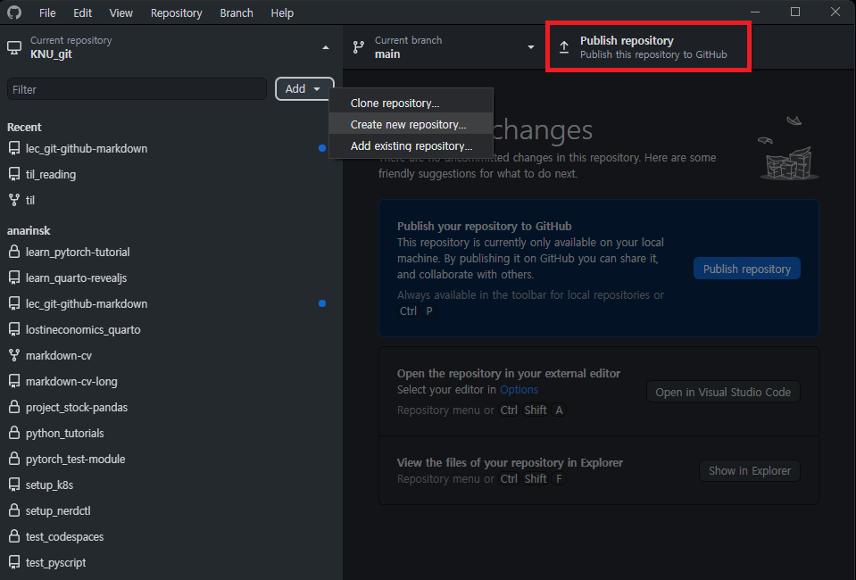
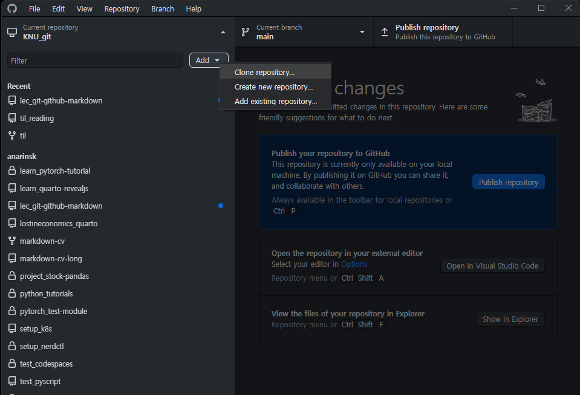

Git, Github and Markdown
Three Tools for Economists
2022-07-29
시작하기에 앞서
우선 이렇게 가정합니다!
목적과 동기의 호응
“서로 뭘 하는지 목적을 맞춰야 뭐 하나라도 건질 수 있겠죠?”
오늘 튜토리얼을 하는 이유
- 연구자라면 git과 github에 관한 지식이 필수적인 시대
- 보다 편리한 (학술) 문서 작성과 유통을 위한 방법
- (강사 개인) VCS와 스크립트 랭귀지를 다루는 기쁨을 맛보시기를…
오늘 튜토리얼의 목적
- Git이 왜 중요한지 알아보자.
- Github 계정을 만들고 최초의
commit,push,pull을 해보자.
- Markdown으로 문서를 작성해보자.
좀 더 욕심을 내보자면…
- Github 위에 블로그 만들기
- 코드가 가미된 Markdown 문서 만들어보기
좀 더 욕심을 내보자면…
- Github 위에 블로그 만들기
- 코드가 가미된 Markdown 문서 만들어보기
Why Git?
It’s Timeline
History

- Git은 리눅스의 개발 과정에서 탄생했다.
- Open Source의 특성상 개발 이력 관리가 필요
- 이른바 VCS를 (의도하지 않게) 혁신
- VCS란?
- Version Control System
- Git이 없었다면 리눅스도 없었다!
- 협업의 기술적 기초
- 좋은 도구는 협업의 효율성과 가능성을 넓힌다.
- Git은 현재 표준적인 협업 도구
Git이란?
- 한마디로 말하면 VCS이다.
- 누가 무엇을 언제 바꾸었는지를 일목요연하게 기록한다.
- 필요한 시점으로 언제든 돌아갈 수 있다(백업).
잠깐!
- 우리는 지금 git을 본격적으로 배우는 것이 아니다…
- 따라서 이 특강에서는 1인 사용자만을 가정
- 1인일 때도 쓸모가 있을까?
- 나는 어제 뭐했는지도 정확하게 기억하지 못한다…
- Git + Github는 나의 어리석음을 보완해준다.
- 웹하드와 유사한 것일까?
- Half Yes; 파일을 저장
- Half No; 대용량 파일 저장 불가
- 코드/문서를 관리하고 정리하는 용도
- 1인 이용시, 기기 간 이동 작업에 편리
- 협업 시, 버전 관리의 자동화
- Github의 경우
- 뒤에서 보겠지만, 개발자/연구자에게 유용한 부가 기능 제공
Basics of Git
Add, Commit, Push, Pull

여러분의 버전 관리는 아마도…?


Add & Commit

Add & Commit
Working Directory- 무슨 일이든 해도 좋다!
Staging Area- 저장이 필요한 수정/추가된 파일의 목록을 만들어 둔다.
Commit- Staging Area의 내용을 모아서 스냅샷을 만든다.
연습: 준비물
- Git (for Windows)
- Github Desktop (계정 만들어 두셨쥬?)
Git 폴더 만들기
Git 폴더를 만드는 방법은 세 가지가 있습니다.
- 애초부터 Git 폴더로 생성하기
- Github에서 Clone 해오기
Github Desktop


Add & Commit 이해하기
Add는 커밋할 상태로 파일을 올려두는 것을 의미합니다.Commit은 (임시) 저장이라고 이해하면 편합니다.Commit을 해두면 그 이전 상태로 언제든지 돌아갈 수 있습니다.- 단, Github Desktop 앱을 통해서는 아닙니다…
- 터미널 혹은 SourceTree를 쓰면 자유롭게 활용할 수 있습니다.
두려워 마세요!
“그냥 파일 시스템일 뿐입니다. 복붙에서 저장해 두면 되요.”
깃 (더) 배우기
Branch

Git과 Github의 역할
- 무궁무진할 정도로 다양합니다.
- Github는 공통작업을 기본으로 합니다.
Github는 원격 저장소
- 작업한 내용을 온라인을 통해 동기화
- 일종의 원격 저장소
- 1인용; 서로 다른 기기로 작업할 때 유용
- PC 1 작업 → Git Push → PC2 Git Pull → 작업 → Git Push → PC 3 GIt Pull → \(\cdots\)
- 다인용; 프로젝트의 일관성 유지 및 관리
- Branch, Pull Request, Fork 등의 개념이 필요
- 익숙하지 않을 뿐 그렇게 어려운 개념은 아닙니다.
- 2018년 마이크로소프트에서 인수
- 개인 및 소규모 개발사의 기본적인 기능은 무료
Other Services in Github
- Github Pages
- Static Web Hosting
- Github Actions
- Automation service
- Github Copilot
- Code completion assisted by AI(GPT-3)
\(\vdots\)
- Code completion assisted by AI(GPT-3)
Markdown
쉽고 효율적인 스크립트 문서 도구
- 구조화된 글쓰기 가능
- \(\rm \LaTeX\) 친화적
- 다른 문서 포맷으로 쉽게 바꿀 수 있다.
- 코드(Python, R, etc)와 문서를 융합할 수 있다.
- 깃헙의 기본 문서 포맷
- 깃헙 리포에서 제일 먼저 보게 되는 내용;
README.md - 자신의 프로젝트를 알리는 문서
- 깃헙 리포에서 제일 먼저 보게 되는 내용;
마크다운 기본 문법
Tip
- 모든 마크다운 문법이 동일하지는 않다.
- Github-flavored markdown, Kramdown 등등
- 기본 문법은 동일하니 기본적인 부분을 파악해두면 된다.
- 서비스 별로 특화된 부분은 개별적으로 활용하면 됨
연습: 준비물
- VS Code
- “Makrdown All in One” 확장 설치
- https://stackedit.io/app#
Github Pages + Markdown
Github Pages
https://docs.github.com/en/pages
- Github의 가장 좋은 기능
- (공짜로) 복잡한 서버 세팅 없이 웹 페이지를 호스팅해준다.
- 복잡한 웹 서버는 아니다.
- Static Web을 지원
- 이미 렌더링된 페이지를 노출한다.
작업 흐름
- local(your PC)에서 도구를 사용해서 페이지 렌더링
- 렌더링된 페이지를 Github으로 push
- Github Pages가 스태틱웹의 형태로 페이지를 호스팅
Pros & Cons
- 장점
- 플랫폼 종속성 최소화
- 깔끔하게 공간을 꾸밀 수 있다.
- \(\rm \LaTeX\) 친화적
- (암묵적) 비용이 들지 않는다.
- 단점
- WYSIWYM을 활용할 수 있다.
- 진입 장벽
- 디자인 요소가 부족하다.
- 전달/전파가 용이하다.
- WYSIWYM을 활용할 수 있다.
무엇을 할 수 있나?
- 단순 웹 페이지
- 프로젝트 웹 페이지
- 책
- 블로그
연습: 준비물
QuartoVS Code- Quarto Extension
Step by Step
- Github Pages를 활용할 예정
- Github Desktop 앱으로 적당한 Git 폴더 생성
KNU Summer Special Tutorial